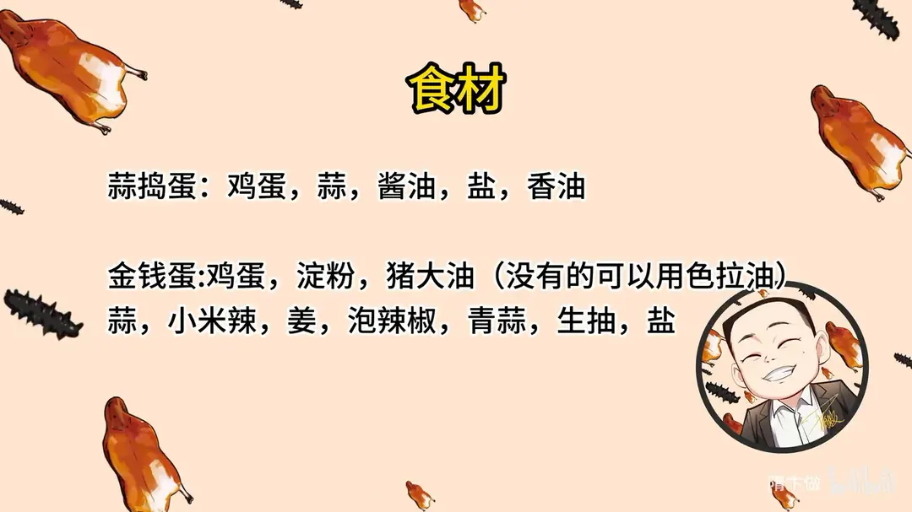
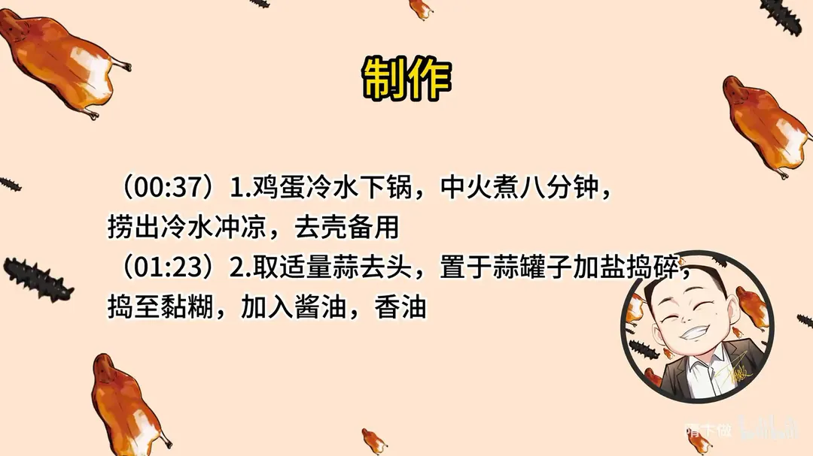
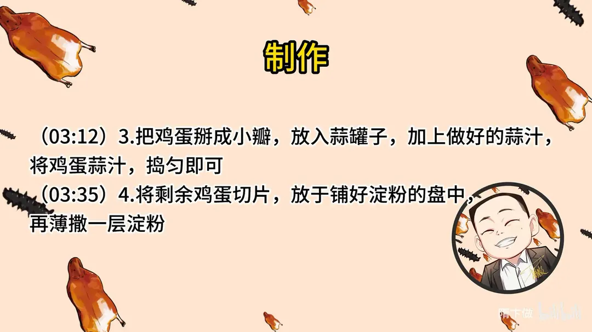
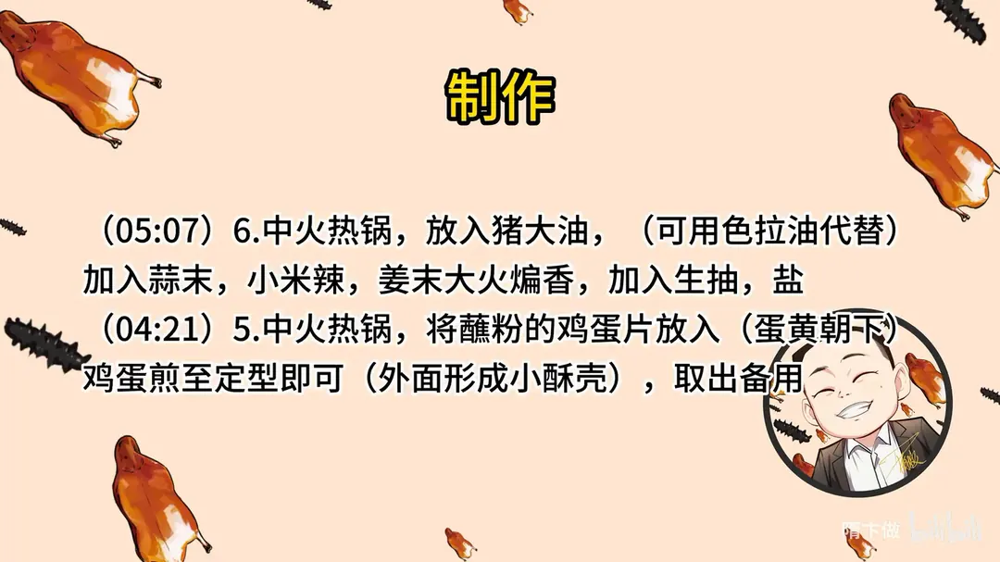
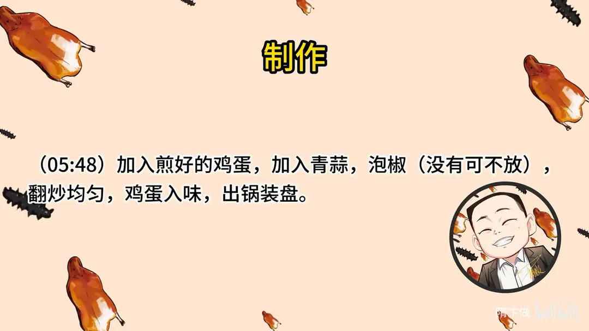

香煎金钱蛋
隋卞一做。鸡蛋一半掰瓣拌蒜汁捣成蒜捣蛋，一半切片蘸淀粉煎出小酥壳，再与蒜末、小米辣、泡椒同炒。
原视频：https://www.bilibili.com/video/BV1Ak4y1p78E
食材
鸡蛋、蒜、淀粉 等 15 样
| 类别 | 用料 | 用量 |
|---|---|---|
| 蒜捣蛋 | 鸡蛋 | 适量 |
| 蒜捣蛋 | 蒜 | 适量 |
| 蒜捣蛋 | 酱油 | 适量 |
| 蒜捣蛋 | 盐 | 适量 |
| 蒜捣蛋 | 香油 | 适量 |
| 金钱蛋 | 鸡蛋 | 适量 |
| 金钱蛋 | 淀粉 | 适量 |
| 金钱蛋 | 猪大油 | 适量 |
| 金钱蛋 | 蒜 | 适量 |
| 金钱蛋 | 小米辣 | 适量 |
| 金钱蛋 | 姜 | 适量 |
| 金钱蛋 | 泡辣椒 | 适量 |
| 金钱蛋 | 青蒜 | 适量 |
| 金钱蛋 | 生抽 | 适量 |
| 金钱蛋 | 盐 | 适量 |
步骤
- 煮蛋：鸡蛋冷水下锅，中火煮八分钟，捞出冷水冲凉，去壳备用。
- 捣蒜汁：取适量蒜去头，置于蒜罐子加盐捣碎，捣至黏糊，加入酱油、香油。
- 拌蒜捣蛋：把鸡蛋掰成小瓣，放入蒜罐子，加上做好的蒜汁，将鸡蛋蒜汁捣匀即可。
- 切片蘸粉：将剩余鸡蛋切片，放于铺好淀粉的盘中，再薄撒一层淀粉。
- 煎蛋：中火热锅，将蘸粉的鸡蛋片放入（蛋黄朝下），鸡蛋煎至定型，外面形成小酥壳即可，取出备用。
- 炒香料：中火热锅，放入猪大油（可用色拉油代替），加入蒜末、小米辣、姜末大火煸香，加入生抽、盐。
- 合炒：加入煎好的鸡蛋，加入青蒜、泡椒（没有可不放），翻炒均匀，鸡蛋入味，出锅装盘。
讲解要点
难度：★★☆☆☆（几乎零手艺门槛，难点是煮蛋的火候和煎蛋时别弄散）
为什么这么做
- 一律煮 8 分钟：一斤八个的鸡蛋，凉水下锅烧开后再煮 8 分钟，蛋黄刚熟、带一点粉；蒜捣蛋要捣匀，金钱蛋要切片，都必须蛋黄凝固，流心的一律不能用。
- 捞出立刻冲凉：热胀冷缩让蛋清收缩离壳；冲水时顺手磕一下，水从裂缝渗进蛋壳和蛋膜之间，剥起来整颗都不破。
- 捣蒜先切掉蒜根、加盐再捣：蒜瓣整颗容易乱跑，盐能在碗底形成磨料，也能让蒜的辣味更快渗出来；捣到黏糊糊才算到位。
- 蒜汁要现调现用：酱油定色、香油封香，再补一点盐；饭店常只在上面淋一点蒜汁，其实捣匀了吃才够味。
- 蛋片两面薄薄拍淀粉：薄粉在油里迅速结壳，兜住蛋黄，煎的时候不散不溅；粉太多反而发硬、影响口感。
- 先用中火煎出酥壳：这一步只为定型、上壳，不必煎熟透，后面还要回锅炒。
- 用猪大油炒香料：猪油的脂香比植物油厚，蒜末、小米辣、姜末煸到出黄边香味才足；泡椒可有可无，只是加点湖南式的辣味。
容易翻车
- 煮过 8 分钟蛋黄就会发绿发干，捣出来起沙粒、切片也碎。
- 蛋片下锅时蛋黄朝下，两块蛋黄的就无所谓；温度不够时没有「啦啦」声，要及时补火。
- 淀粉撒太厚，煎完壳硬、炒的时候容易掉。
- 蒜在小碗里捣容易打翻、把碗砸裂，碗要放在结实平整的台面上。
- 蒜煸到出黄边就够了，再煸就发苦。
热评补充
- 蒜捣蛋捣得越碎越好吃，网友形容捣稀了就是「中式蛋黄酱」：蛋黄被捣得沙沙的，混着香油、酱油的香，抹馒头、卷煎饼、配豆腐都很下饭。
- 家里蒜不多、料放得薄，成品会失色不少，蒜量宁可足一点。
原片尾卡





原片文案
AI 字幕校准稿
我们从湖南回来了，带着好多菜回来了。今天给你们来一个鸡蛋两吃，我给你们做第一个，四方坪同款的金钱蛋。不能吃辣的同学也不用担心、不要害怕，隋老师还给你准备了另外一个。我们餐厅一年多了，这道菜是小李喜欢的菜品前几名。
这两个菜都是以鸡蛋为主料。第一步先把鸡蛋煮熟：鸡蛋放里边，冷水下锅开火，把盖扣上。怎么判断鸡蛋熟没熟？正常水没过鸡蛋，凉水下锅烧开之后，常见的一斤八个的鸡蛋就要煮 8 分钟，心是刚熟的状态；想吃流心的那个，6 分钟就行。捞出来以后迅速冲凉就没有问题。今天要做的这两个菜，芯必须是凝固的，流心的不能用，所以整体都控制在 8 分钟左右。
趁着煮鸡蛋，咱们切点蒜。蒜要把根部的地方切掉，放在蒜罐子里，这个叫蒜臼子，没有的话用碗也行，但碗一定要放在比较结实的地方再去砸。小时候没少挨打，就为了砸蒜，饭碗都砸裂了。蒜放里边，然后加盐。刚开始砸的时候，蒜整瓣是光溜溜的，老跑，所以手得捂着点；加完盐之后，它就不乱跑了，而且便于蒜辣素渗出来。砸了以后特别黏糊，黏糊了就行了。加酱油，做出来什么颜色？红的。加香油，再补点盐，这汁就算调好了。
鸡蛋也煮好了，迅速过凉，把皮剥了。在冲水的时候把它磕一下——顺着鸡蛋皮，水会渗进去一点，就特别好剥皮。给你们剥一个，看煮成什么样，刚熟，还有点粉，大概这种程度就可以了。正常情况这个应该把鸡蛋轻轻一掰搁里边，但我们这个家伙有点小，就拿手攥一下。在罐子里倒上蒜汁，把蒜汁跟鸡蛋捣匀了就行了，块大点小点都没太大关系。有的饭店为了好看，上面淋一点这个蒜汁就直接给您上了，也有这么干的。
剩下的鸡蛋给你们做金钱蛋。旁边撒上点淀粉，撒一层就可以了。把煮好的鸡蛋切成厚片，刀上沾点水就不粘刀。放在盘里边，下边沾上淀粉。我们在四方坪吃的那个金钱蛋，好多都是蛋黄跟蛋清分离的；我们这么小心地切，就是为了尽可能让它保持完整，蛋黄不掉，尽量让你一口咬下去，蛋黄蛋白都能吃到。把切好的鸡蛋放在淀粉上面，再在上面撒上一层，不要撒太多，这个太多了会影响口感，薄薄一层就行了，油煎的时候它就会定型。
好了，上火开干。锅里边放上油，你看现在温度够了，开始冒烟的时候下锅，把咱们拍好粉的鸡蛋片放里边，全都让蛋黄朝下，两块蛋黄的就无所谓了。温度有点不太够了，开火；判断温度不太高，你鸡蛋下去之后没有啦啦的响声，就把火开开，慢慢煎，慢慢地翻面，把鸡蛋表面煎出一个壳来就行了。这一步主要是为了让它定型，表面有一层小酥壳就好了。倒出来。
放点猪大油，家里人没有猪大油就用色拉油，油得稍微多一点。旁边加上蒜、小米辣、姜末，然后把这蒜煸黄，有黄边了就出香味了。然后放上生抽、放点盐，把煎好的鸡蛋倒进去，青蒜、湖南人那种泡椒来一点，增加点香味。最后放的泡辣椒，家里人没有不放也行，我们加点就是为了增加一个复刻的辣味。出锅装盘。
带着馒头就上来了。酱油菜简直就是为了打馒头的，太好吃了，卷个什么煎饼、卷个什么烙饼，我觉得都行。它能把那个蛋黄打得沙沙的，口感特别好，再混着蒜、香油、酱油的那种香味。加馒头一绝。我这个做的比四方坪的做得比较整，外面那个酥壳还挺脆，里边你还吃着淡淡的香味；它也能吃到蒜的香，旁边是一个薄薄的小酥壳，你吃的时候嘎嘣嘎嘣的脆。这个蛋刚刚煎好、还没有炒的时候，我那时候吃着都已经特别好吃了，再加上这个炒香了的料，这一口我感觉回长沙了。